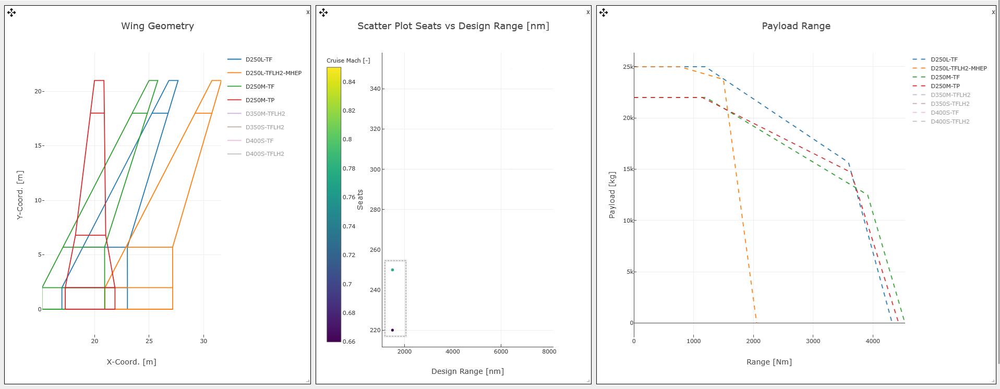
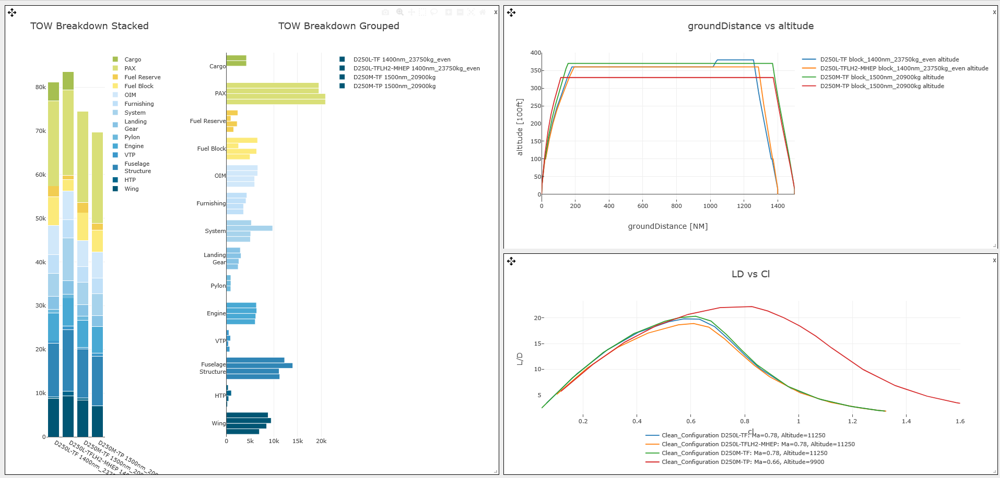

The following examples showcase how DIANA can be used to explore, analyze, and explain data. Each case demonstrates a different capability — from concept validation and trend discovery to explainable AI analysis — allowing users to understand the full potential of the framework.
1. Hydrogen vs Kerosene Comparison
This example demonstrates how DIANA enables validation and performance analysis between a hydrogen and the correspondent kerosene aircraft concepts, allowing to discover new trends and drawing some provisional conclusions.
To achieve this two dashboards were generated. In the first one we have three charts, from left to right, the wing geometry comparison, horizontal tail plane comparison and a mass breakdown of both aircraft. In orange the kerosene concept and in blue the hydrogen one.
As known, weight is a key parameter for aircraft design, always being desired to me minimized. As it can be observed in the chart, the take off mass of the hydrogen concepts is higher, coming specially from an increase in the fuselage structure and system masses. This allows us to validate the correct implementation of hydrogen , as a weight penalty due to the inclusion of the tanks was expected.

Figure 1. Dashboard comparing wing and HTP geometry, as well as mass Breakdown of the kerosene (orange) and hydrogen (blue) concepts. /p>
However, new unexpected trends can also be discovered. Due to the inclusion of the tanks, the center of gravity of the aircraft is moved backwards (as tanks are included in the rear of the fuselage). As a consequence the wing is shifted backwards too, leading to an increment in the size of the horizontal tailplane.
In the second dashboard below, the performance of both aircraft are compared. On the left we have a payload range diagram and on the right a specific block energy chart. From the chart on the right it can be seen that despite the increased weight, the specific energy consumption of the hydrogen concept is very close to that of the kerosene aircraft, inferring that the use of a mild hybrid propulsion system, allows for an efficient use of fuel with sustained energy consumption.

Figure 2. Dashboard comparing Payload Range diagrams and specific block energy of the kerosene (orange) and hydrogen (blue) concept. /p>
In the same dashboard, it is clearly shown that this comes with reduced payload-range capabilities. The hydrogen concept has a maximum range roughly half of the kerosene one. However, the main areas of interest for the short haul market, with high payload and ranges between one thousand to two thousand nautical miles can still be covered.
As a conclusion of this study, and with numerous assumptions behind, provided that the hydrogen concept can cover a good enough portion of the short-range air transport market, and the costs of LH2 will be sufficiently low (in comparison to SAF), the hydrogen solution offer potential for a high climate impact reduction while being competitive.
2. Fleet evaluation for Airline Operations
In this example, DIANA is used to support an airline during the evaluation of a proposed fleet consisting of eight candidate aircraft from a single manufacturer. The goal is to explore the design space, compare the performance and operational characteristics, and progressively narrow down the options until a selection is made.
To achieve this, the first step is to get a general overwiew of the whole fleet. This can be done by generating a first dashboard with the eight different aircraft, as it can be shown below. Three different charts have been generated. First two aircraft design charts, such as the wing geometry and the payload range, and then a third chart showing the seats, range and cruise speed of the different aircraft

Figure 1. Dashboard comparing wing geometry, payload range and performance characteristics of eight different aircraft. /p>
These charts allow us to obtain a first idea of which kind of aircraft the possible seller is building. As it can be observed from the middle chart, all aircraft have a capacity of over 200 passengers (with some arriving to 350) and a design range from almost 2000nm to over 80000nm. This means that all of them are commercial aircraft, although designed for really different flight markets, from short/medium to really long haul. This can also be confirmed with the different capabilities shown in the payload range and by the great difference existing in the geometries of the different aircraft
Consider for this example that the airline is specially interested on a new aircraft for the short/medium market. To determine which of the available aircraft belong to this market, we can filter the different possibilities by a box selection in the middle chart, selecting only the aircraft belonging to that market segment (as shown below). This also filters the different aircraft from the other corresponding charts, allowing us to perform a first provisional comparison of this dataset subselection.
Figure 2. Short/Medium market fleet selection /p>
Although it seemed at a first glance that only two different aircraft belonged to this market segment, it is shown on the other two charts that indeed there is a total of four different aircraft possibilities form which to choose from. Three of the four aircraft have similar performance capabilities, with the hydrogen version limited to shorter missions (as expected). From the wing design, it is observable that all of them have similar if not identical wing span, although the positioning of the wing and the specific geometry varies from one to another.
This dashboard is not enough to take a decision. Therefore, a second dashboard is created with more information, as shown in the picture below. This new dashbboard contains the mass breakdown comparison on the left, with the trajectory and aerodynamic information of the different aircraft on the right.
Figure 3. Short/Medium market fleet aircraft design charts /p>
Both dashboard together provide information enough to differentiate the four different options. There is a first cluster with two different D250-L (kerosene and hydrogen). There is a second cluster with less passenger capabilities called D250-M, both in turbofan (TF) and turboprop (TP), but with better aerodynamic performance (as illustrated by a higher L/D). As the hydrogen/kerosene comparison was performed before, lets consider that we as airline are interested on this case on the D250-M. This filters again our options from 4 to 2, but there is still a selection to be made regarding the engine (TF or TP)
Some differences can be already observed in this dashboard, such as a lower flight altitude for the TP, or a better aerodynamic performance. However, to have a complete picture and take a better informed decision, a third and final dashboard can easily be generated with more detail information, as shown below. This new dashboard contains 8 different charts. These are the mass breakdown on the topr left, the 3D geometries and aerodynamic characteristics on the top right. Finally there is a radar comparison charts and a wing geometry comparison on the bottom left, and the payload range diagram on the bottom right.
To start the analysis, we can focus on the radar chart. It can be observed that both aircraft have an equal number of seats and the same design range. However, the turbofan has a slighter higher maximum range and is faster than the turboprop version. Not all are advantages for the turbofan concept. Aerodynamically, the turboprop is more efficient (higher cl/cd and LD). This makes the aircraft to be more efficient from operational point of view, as the amount of fuel necessary to be consumed for the same mission is lower (as it can be observed on the left mass comparison).
As a conclusion, thanks to the different dashboards we were capable of filtering the different options until finishing with two possible candidates. With the last dashvboard we have a first glance of tboth aircraft as well as of their main characteristics. The final decision will depend on what objectives are wanted to be prioritized more (speed or fuel consumption mainly), but now stakeholders have the necessary information to take a correct decision.